토목산업기사 (2014-05-25 기출문제)
1과목: 응용역학
1. 다음 그림과 같은 구조물에서 부재 AB가 받는 힘은 약 얼마인가?
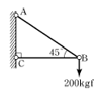
- 200 kgf
- 215 kgf
- 235 kgf
- 283 kgf
(정답률: 80%)

2. 그림과 같은 단주에서 편심하중이 작용할 때 발생하는 최대인장응력은? (단, 편심거리 e=10 cm)
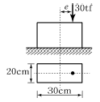
- 30 kgf/cm2
- 50 kgf/cm2
- 70 kgf/cm2
- 90 kgf/cm2
(정답률: 67%)
3. P1, P2 가 0(zero)으로부터 작용하였다. B점의 처짐이 P1 으로 인하여 δ1, P2 로 인하여 δ2 가 생겼다면 P1 이 하는 일은?
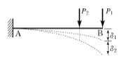
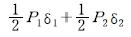
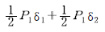
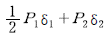
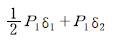
(정답률: 49%)
4. 지름이 6cm, 길이가 100cm의 둥근막대가 인장력을 받아서 0.5cm 늘어나고 동시에 지름이 0.006cm만큼 줄었을 때 이 재료의 푸아송비(ν) 얼마인가?
- 5
- 2
- 0.5
- 0.2
(정답률: 69%)
5. 아래 그림과 같은 보의 단면에 발생하는 최대 휨응력은?
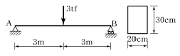
- 150 kgf/cm2
- 200 kgf/cm2
- 250 kgf/cm2
- 300 kgf/cm2
(정답률: 63%)
6. 그림과 같은 I 형 단면에서 중립축 x-x 에 대한 단면2차모멘트는?
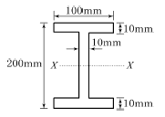
- 4,374.00 cm4
- 6,666.67 cm4
- 2,292.67 cm4
- 3,574.76 cm4
(정답률: 75%)
7. 등분포하중(w)이 재하된 단순보의 최대 처짐에 대한 설명 중 틀린 것은?
- 하중 w에 비례한다.
- 탄성계수 E 에 반비례한다.
- 경간 L의 제곱에 반비례한다.
- 단면2차모멘트 I 에 반비례한다.
(정답률: 75%)
8. 단순보에 있어서 원형 단면에 분포되는 최대 전단응력은 평균 전단응력( V/A)의 몇 배가 되는가?
- 1.0배
- 4/3배
- 2/3배
- 1.5배
(정답률: 75%)
9. 그림과 같은 구조물에서 C점의 휨모멘트 값은?
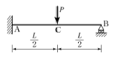
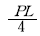
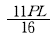
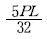
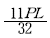
(정답률: 59%)
10. 다음 보의 지점 A에서 모멘트하중 Mo를 가할 때 타단 B의 고정단모멘트의 크기는?
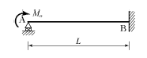
- Mo
- Mo/2
- Mo/3
- Mo/4
(정답률: 64%)
11. 아래의 표에서 설명하는 부정정 구조물의 해법은?
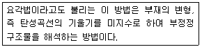
- 모멘트 분배법
- 최소일의 방법
- 변위일치법
- 처짐각법
(정답률: 68%)
12. 중심 축하중을 받는 장주에서 좌굴하중은 Euler 공식
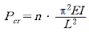
로 구한다. 여기서 n 은 기둥의 지지 상태에 따르는 계수인데 n 값이 틀린 것은?- 일단고정, 일단 자유단일 때, n =1/4
- 일단 고정, 일단 힌지일 때, n =3
- 양단 고정일 때, n =4
- 양단 힌지일 때, n =1
(정답률: 72%)
13. 그림과 같은 내민보에서 A지점에서 5m 떨어진 C점의 전단력 VC 와 휨모멘트 MC는?
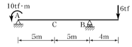
- VC=-1.4 tf, MC=-17 tf⋅m
- VC=-1.8 tf, MC=-24 tf⋅m
- VC=+1.4 tf, MC=-24 tf⋅m
- VC=+1.8 tf, MC=-17 tf⋅m
(정답률: 70%)
14. 다음 중 처짐을 구하는 방법과 가장 관계가 먼 것은?
- 탄성하중법
- 3연 모멘트법
- 모멘트 면적법
- 탄성곡선의 미분방정식 이용법
(정답률: 56%)
15. 그림과 같은 보에서 C점의 전단력은?
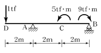
- -0.5 tf
- 0.5 tf
- -1 tf
- 1 tf
(정답률: 47%)
16. 다음 그림의 트러스에서 DF의 부재력은?
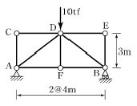
- 0 tf
- 2 tf
- 5 tf
- 10 tf
(정답률: 70%)
17. 그림과 같은 단면의 x축에 대한 단면1차모멘트는 얼마인가?
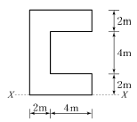
- 128cm3
- 138cm3
- 148cm3
- 158cm3
(정답률: 72%)
18. 다음 그림에서 지점 A의 반력이 0이 되기 위해 C점에 작용시킬 집중하중 P의 크기는?
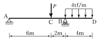
- 12 tf
- 16 tf
- 20 tf
- 24 tf
(정답률: 70%)
19. 다음의 라멘 구조에서 A점의 수평반력 HA는 얼마인가?
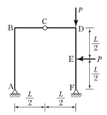
- P/2(←)
- P/4(←)
- P/2(→)
- P/4(→)
(정답률: 62%)
20. 길이 1m, 지름 1.5cm의 강봉을 8 tf로 당길 때 이 강봉은 얼마나 늘어나겠는가? (단, E=2.1×106kgf/cm2)
- 2.2mm
- 2.6mm
- 2.8mm
- 3.1mm
(정답률: 68%)
2과목: 측량학
21. 촬영고도 750m의 밀착사진에서 비고 15m에 대한 시차차의 크기는? (단, 카메라의 초점거리 15cm, 사진의 크기 23×23cm, 사진의 종중복도는 60%로 한다.)
- 4.84mm
- 3.84mm
- 2.84mm
- 1.84mm
(정답률: 37%)
22. 토공량을 계산하기 위해 대상구역을 사각형으로 분할하여 각 교점에 대한 성토고를 계산한 결과 그림과 같다면 성토량은?
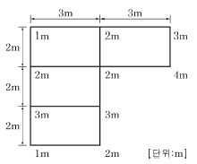
- 54.5m3
- 55.5m3
- 58.5m3
- 60m3
(정답률: 68%)
23. 수준측량에서 경사거리 S, 연직각이 α일 때 두 점간의 수평거리 D 는?
- D=S sin α
- D=S cos α
- D=S tan α
- D=S cot α
(정답률: 73%)
24. 전진법에 의해 5각형의 토지를 측량하였다. 측점 A를 출발하여 B, C, D, E, A에 돌아왔을 때 폐합오차가 20cm이다. 측점 D의 오차분배량은? (단, AB=60m, BC=50m, CD=40m, DE=30m, EA=40m이다.)
- 0.036m
- 0.072m
- 0.108m
- 0.136m
(정답률: 46%)
25. GPS 측량으로 측점의 표고를 구하였더니 89.123m이었다. 이 지점의 지오이드 높이가 40.150m라면 실제표고(정표고)는?
- 129.273m
- 48.973m
- 69.048m
- 89.123m
(정답률: 67%)
26. 클로소이드 매개변수(Parameter) A가 커질 경우에 대한 설명으로 옳은 것은?
- 곡선이 완만해진다.
- 자동차의 고속 주행이 어려워진다.
- 곡선이 급커브가 된다.
- 접선각( τ)이 비례하여 커진다.
(정답률: 77%)
27. 하천측량에 관한 설명으로 옳지 않은 것은?
- 홍수 유속의 측정에 알맞은 것은 막대기 부자이다.
- 심천측량을 하여 지형을 표시하는 방법에는 점고법이 이용된다.
- 횡단측량은 1km마다의 거리표를 기준으로 하며 우안을 기준으로 한다.
- 무제부에서의 측량범위는 홍수가 영향을 주는 구역보다 약간 넓게 한다.
(정답률: 70%)
28. 그림과 같은 단열삼각망의 조정각이 α1=40°, β1=60°, γ1=80°, α2=50°, β2=30°, γ2=100° 일때,
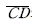
의 길이는? (단,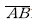
기선 길이 600m이다.)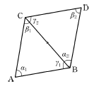
- 323.4m
- 400.7m
- 568.6m
- 682.3m
(정답률: 65%)
29. 측지학 및 측지측량에 대한 설명 중 옳지 않은 것은?
- 측지학이란 지구 내부의 특성, 지구의 형상, 지구 표면의 상호위치 관계를 정하는 학문이다.
- 기하학적 측지학에는 천문측량, 위성측지, 높이결정 등이 있다.
- 지오이드는 평균해수면으로 위치에너지가 1인 면이다.
- 측지측량이란 지구의 곡률을 고려하는 측량으로서 거리허용오차를 1/106로 했을 경우 반지름 11km 이내를 평면으로 취급한다.
(정답률: 60%)
30. 거리관측의 정밀도와 각관측의 정밀도가 같다고 할때 거리관측의 허용오차를 1/3000로 하면 각관측의 허용오차는?
- 4"
- 41"
- 1' 9"
- 1' 23"
(정답률: 60%)
31. 노선측량, 하천측량, 철도측량 등에 많이 사용하며 동일한 도달거리에 대하여 측점 수가 가장 적으므로 측량이 간단하고 경제적이나 정확도가 낮은 삼각망은?
- 사변형 삼각망
- 유심 삼각망
- 기선 삼각망
- 단열 삼각망
(정답률: 72%)
32. 다각측량에서 A점의 좌표가 (100, 200)이고 측선 AB의 방위각이 240°, 길이가 100m일 때 B점의 좌표는? (단, 좌표의 단위는 m이다.)
- (-50, 113.4)
- (50, 113.4)
- (-50, 13.4)
- (50, -113.4)
(정답률: 67%)
33. 구면삼각형에 대한 설명으로 옳지 않은 것은?
- 구면삼각형은 좁은 지역을 측량할 때 고려한다.
- 구면삼각형 내각의 합은 180°를 넘는다.
- 구과량은 구면삼각형의 면적에 비례한다.
- 구과량은 평면삼각형 내각의 합과 구면삼각형 내각의 합에 대한 차이다.
(정답률: 46%)
34. 지형측량에서 등고선 간의 최단거리를 잇는 선이 의미하는 것은?
- 분수선
- 등경사선
- 최대경사선
- 경사변환선
(정답률: 68%)
35. 교각 I = 60°, 반지름 R=200m인 단곡선의 중앙종거는?
- 26.8m
- 30.9m
- 100.0m
- 115.5m
(정답률: 51%)
36. 축척 1 : 25000 지형도상에서 면적을 측정한 결과가 84cm2이었을 때 실제면적은?
- 6.25km2
- 5.25km2
- 4.25km2
- 3.25km2
(정답률: 62%)
37. 노선의 종단측량 결과는 종단면도에 표시하고 그 내용을 기록하게 된다. 이 때 포함되지 않는 내용은?
- 지반고
- 계획고
- 성토고
- 기계고
(정답률: 49%)
38. 완화곡선의 극각(σ)이 45°일 때 클로소이드 곡선, 렘니스케이트 곡선, 3차 포물선 중 가장 곡률이 큰 곡선은?
- 렘니스케이트곡선
- 3차 포물선
- 클로소이드곡선
- 모두 같다.
(정답률: 50%)
39. 항공사진의 기복변위에 대한 설명으로 틀린 것은?
- 지표면의 기복에 의해 발생한다.
- 기복변위량은 촬영고도에 반비례한다.
- 기복변위령은 초점거리에 비례한다.
- 사진면에서 등각점의 상하방향으로 변위가 발생한다.
(정답률: 57%)
40. 교호수준측량을 실시하여 A점 근처에 레벨을 세우고 A점을 관측하여 1.57m, 강 건너편 B점을 관측하여 2.15m를 얻고, B점 근처에 레벨을 세워 B점의 관측값 1.25m, A점의 관측값 0.69m를 얻었다. A점의 지반고가 100m라면 B점의 지반고는?
- 98.86m
- 99.43m
- 100.57m
- 101.14m
(정답률: 55%)
3과목: 수리학
41. 폭이 4m, 수심 2m인 직사각형 수로에 등류가 흐르고 있을 때 조도계수 n=0.02라면 Chezy의 평균유속계수 C는?
- 0.⑤
- 0.5
- 5
- 50
(정답률: 61%)
42. A 저수지에서 1km 떨어진 B 저수지에 유량 8m3/s를 송수한다. 저수지의 수면차를 10m로 하기 위한 관의 직경은? (단, 마찰손실만을 고려하고 마찰손실 계수는 f=0.03이다.)
- 2.15m
- 1.92m
- 1.74m
- 1.52m
(정답률: 68%)
43. 관수로에서 최대유속이 Vmax 이고 평균유속이 Vm이라고 하면, 최대유속 Vmax 와 평균유속 Vm의 관계에 가장 가까운 것은? (단, 층류로 흐르는 경우)
- 평균유속 Vm은 최대유속 Vmax 의 1/2이다.
- 평균유속 Vm은 최대유속 Vmax 의 1/3이다.
- 평균유속 Vm은 최대유속 Vmax 의 1/4이다.
- 평균유속 Vm은 최대유속 Vmax 의 1/6이다.
(정답률: 67%)
44. 그림과 같은 수로에 유량이 11m3/s로 흐를 때 비 에너지는? (단, 에너지보정계수 α=1)
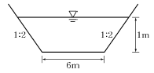
- 1.156m
- 1.165m
- 1.106m
- 1.096m
(정답률: 48%)
45. 힘의 차원을 MLT계로 표시한 것으로 옳은 것은?
- [MLT -2]
- [MLT -1]
- [ML - 2 T 2]
- [ML -1 T -2]
(정답률: 50%)
46. 지하수에서 Darcy의 법칙에 대한 설명으로 옳지 않은 것은?
- 투수계수는 물의 점성계수와 토사의 공극률 등에 따라 변하는 계수이다.
- 지하수의 평균유속은 동수경사에 반비례한다.
- Darcy법칙에서 투수계수의 차원은 속도의 차원과 같다.
- Darcy법칙은 층류로 취급했으며 실험에 의하면 대략적으로 레이놀즈수(Re)<4에서 주로 성립한다.
(정답률: 63%)
47. 완전유체일 때 에너지선과 기준수평면과의 관계는?
- 위치에 따라 변한다.
- 흐름에 따라 변한다.
- 서로 평행하다.
- 압력에 따라 변한다.
(정답률: 72%)
48. 그림은 어떤 개수로에 일정한 유량이 흐르는 경우에 대한 비에너지(He) 곡선을 나타낸 것이다. 동일 단면에 다른 크기의 유량이 흐르는 경우, 3점(A, B, C)의 흐름상태를 순서대로 바르게 나타낸 것은?(오류 신고가 접수된 문제입니다. 반드시 정답과 해설을 확인하시기 바랍니다.)
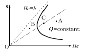
- 사류, 한계류, 상류
- 상류, 사류, 한계류
- 사류, 상류, 한계류
- 상류, 한계류, 사류
(정답률: 33%)
49. 개수로의 흐름을 상류(常流)와 사류(射流)로 구분할 때 기준으로 사용할 수 없는 것은?
- 후루드 수(Froude Number)
- 한계유속(critical celocity)
- 한계수심(critical depth)
- 레이놀즈 수(Reynolds number)
(정답률: 60%)
50. 깊은 우물(심정호)에 대한 설명으로 옳은 것은?
- 불투수층에서 50m 이상 도달한 우물
- 집수 우물 바닥이 불투수층까지 도달한 우울
- 집수 깊이가 100m 이상인 우물
- 집수 우물 바닥이 불투수층을 통과하여 새로운 대수층에 도달한 우물
(정답률: 79%)
51. 물이 들어 있고 뚜껑이 없는 수조가 9.8m/s2으로 수직상향 가속되고 있을 때 수심 2m에서의 압력은?(단, 무게 1kg=9.8N)
- 78.4 kPa
- 39.2 kPa
- 19.6 kPa
- 0 kPa
(정답률: 27%)
52. 그림과 같이 물이 수문의 최상단까지 차있을 때, 높이 6m, 폭 1m의 수문에 작용하는 전수압의 작용점()은?
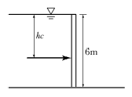
- 3m hc
- 3.5m
- 4m
- 4.3m
(정답률: 60%)
53. 물에 대한 성질을 설명한 것 중 틀린 것은?
- 물의 밀도는 4℃에서 가장 크며 4℃보다 작거나 높아지면 밀도는 점점 감소한다.
- 물의 압축률(Cw)과 체적탄성계수(Ew)는 서로 역수의 관계가 있다.
- 물의 점성계수는 수온(℃)이 높을수록 그 값이 커지고 수온이 낮을수록 작아진다.
- 물은 특별한 경우를 제외하고는 일반적으로 비압축성 유체로 취급한다.
(정답률: 68%)
54. 물이 흐르는 동일한 직경의 관로에서 두 단면의 위치수두가 각각 50cm 및 20cm, 압력이 각각 1.2kg/cm2 및 0.9kg/cm2일 때 두 단면 사이의 손실수두는? (단, 무게 1kg=9.8N, 기타 조건은 동일하다.)
- 5.5m
- 3.3m
- 2.0m
- 1.2m
(정답률: 60%)
55. 베르누이(Bernoulli) 방정식에 대한 설명으로 틀린것은?
- 압축성 유체에 대해서 적용된다.
- 정상류 상태에서 적용된다.
- 유체의 점성으로 인한 효과는 무시한다.
- 압력, 속도, 위치에 대해서 수두로 표현한다.
(정답률: 67%)
56. 직사각형 수로에서 폭 3.2m, 평균유속 1.5m/s, 유량 12m3/s라 하면 수로의 수심은?
- 2.5m
- 3.0m
- 3.5m
- 4.0m
(정답률: 54%)
57. 내경 15cm의 관에 10℃의 물이 유속 3.2m/s로 흐르고 있을 때 흐름의 상태는? (단, 10℃ 물의 동점성계수(ν)=0.0131cm2/s이다.)
- 층류
- 한계류
- 난류
- 부정류
(정답률: 59%)
58. 그림과 같은 오리피스를 통과하는 유량은? (단, 오리피스 단면적 A=0.2m2, 손실계수 C=0.78이다.)
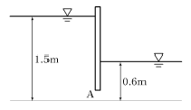
- 0.36m3/s
- 0.46m3/s
- 0.56m3/s
- 0.66m3/s
(정답률: 67%)
59. 두 개의 평행한 평판 사이에 점성유체가 흐를 때 전단응력에 대한 설명으로 옳은 것은?
- 전 단면에 걸쳐 일정하다.
- 포물선분포의 형상을 갖는다.
- 벽면에서는 0이고, 중심까지 직선적으로 변화한다.
- 중심에서는 0이고, 중심으로부터의 거리에 비례하여 증가한다.
(정답률: 68%)
60. 유량 Q, 유속 V, 단면적 A, 도심거리 hG라 할때 충력치(M)의 값은? (단, 충력치는 비력이라고도 하며, η : 운동량 보정계수, g : 중력가속도, W : 물의 중량, w : 물의 단위중량)
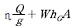
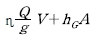
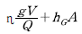
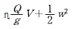
(정답률: 69%)
4과목: 철근콘크리트 및 강구조
61. 아래 그림과 같은 단철근 직사각형 보에서 필요한 최소철근량( A s,min)으로 옳은 것은? (단, fck=28MPa, fy=400MPa)
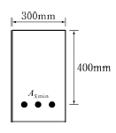
- 364mm2
- 397mm2
- 420mm2
- 468mm2
(정답률: 65%)
62. 강도설계법에서 계수하중 U를 사용하여 구조물 설계시 안전을 도모하는 이유와 가장 거리가 먼 것은?
- 구조해석 할 때의 가정으로 인한 것을 보완하기 위하여
- 하중의 변경에 대비하기 위하여
- 활하중 작용시의 충격 흡수를 위해서
- 예상하지 않은 초과 하중 때문에
(정답률: 50%)
63. PSC에서 프리텐션 방식의 장점이 아닌 것은?
- PS 강재를 곡선으로 배치하기 쉽다.
- 정착장치가 필요하지 않다.
- 제품의 품질에 대한 신뢰도가 높다.
- 대량 제조가 가능하다.
(정답률: 67%)
64. 단철근 직사각형보에서 fy=300MPa, d=800mm이고, 균형단면일 때의 중립축거리 c 는?
- 402mm
- 447mm
- 482mm
- 533mm
(정답률: 68%)
65. 인장을 받는 이형철근의 겹침이음에서 B급이음에 해당되면 이때 규정에 따라 계산된 인장 이형철근의 정착길이( ld )의 몇 배 이상의 겹침이음을 두어야 하는 가?
- 1.1배
- 1.2배
- 1.3배
- 1.4배
(정답률: 67%)
66. 아래 그림과 같은 판형에서 stiffener(보강재)의 사용목적은?
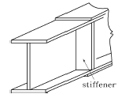
- web plate의 좌굴을 방지하기 위하여
- flange angle의 간격을 넓게 하기 위하여
- flange의 강성을 보강하기 위하여
- 보 전체의 비틀림에 대한 강도를 크게 하기 위하여
(정답률: 71%)
67. 옹벽설계시의 안정 조건이 아닌 것은?
- 전도에 대한 안정
- 지반 지지력에 대한 안정
- 활동에 대한 안정
- 마찰력에 대한 안정
(정답률: 51%)
68. 압축단면에서 중립축까지의 거리(c)가 500mm인 철근큰콘크리트보가 있다. 콘크리트의 설계기준강도 fck가 60MPa인 고강도 콘크리트로 보를 제작할 때 이 보에서 계산될 수 있는 최대 응력 사각형의 높이 a는 얼마인가?
- 275mm
- 325mm
- 375mm
- 425mm
(정답률: 67%)
69. 상부철근(정착길이 아래 300m를 초과되게 굳지 않은 콘크리트를 친 수평철근)으로 사용되는 인장이형철근의 정착길이를 구하려고 한다. fck=21MPa, fy=300MPa을 사용한다면 상부철근으로서의 보정계수를 사용할 때 정착길이는 얼마 이상이어야 하는가? (단, D29 철근으로 공칭지름은 28.6mm, 공칭단면적은 642mm2이고 기타의 보정계수는 적용하지 않는다.)
- 1,461mm
- 1,123mm
- 987mm
- 865mm
(정답률: 49%)
70. 다음 중 전단철근에 대한 설명으로 틀린 것은?
- 철근콘크리트 부재의 경우 주인장 철근에 45° 이상의 각도로 설치되는 스터럽을 전단철근으로 사용할 수있다.
- 철근콘크리트 부재의 경우 주인장 철근에 30° 이상의 각도로 구부린 굽힘철근을 전단철근으로 사용할 수있다.
- 전단철근의 설계기준항복강도는 500MPa를 초과할 수 없다.
- 전단철근으로 사용하는 스터럽과 기타 철근 또는 철선은 콘크리트 압축연단으로부터 거리 d/2만큼 연장하여야 한다.
(정답률: 49%)
71. 프리스트레스트 콘크리트 해석상의 가정에 대한 설명으로 틀린 것은? (단, 균열발생 전의 단면응력을 해석할 경우)
- 단면의 변형률은 중립축으로부터의 거리에 반비례한다.
- 콘크리트의 총 단면을 유효하다고 본다.
- 긴장재를 부착시키기 전의 단면의 계산에 있어서는 덕트의 단면적을 공제한다.
- 콘크리트와 PS강재 및 보강철근은 탄성체로 본다.
(정답률: 59%)
72. 아래 그림과 같은 단면의 보에서 콘크리트가 부담 하는 공칭전단강도(Vc)는? (단, fck=28MPa, fy=400MPa, As=1540mm2)
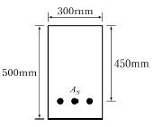
- 103.78kN
- 119.06kN
- 132.29kN
- 156.62kN
(정답률: 69%)
73. 압축이형철근의 정착에 대한 설명으로 틀린 것은?
- 정착길이는 기본정착길이에 작용 가능한 모든 보정 계수를 곱하여 구한다.
- 정착길이는 항상 200mm 이상이어야 한다.
- 해석결과 요구되는 철근량을 초과하여 배근한 경우의 보정계수는 (소요 As / 배근 As) 이다.
- 표준 갈고리를 갖는 압축이형철근의 보정계수는 0.80이다.
(정답률: 49%)
74. 대칭 T형보에서 플랜지 두께(t)는 100mm, 복부폭(bw)은 400mm, 보의 경간이 6m이고 슬래브의 중심간 거리가 3m일 때 플랜지 유효폭은 얼마인가?
- 1,000mm
- 1,500mm
- 2,000mm
- 3,000mm
(정답률: 61%)
75. 전단설계의 원칙에 대한 설명으로 틀린 것은?
- 공칭전단강도( Vn )에 강도감소계수를 곱한 값이 계수전단력( Vu )보다 크게 설계하여야 한다.
- 공칭전단강도( Vn )는 콘크리트에 의한 전단강도에서 전단철근에 의한 공칭전단강도( Vs )를 뺀 값이다.
- 공칭전단강도( Vn )를 결정할 때, 부재에 개구부가 있는 경우에는 그 영향을 고려하여야 한다.
- 콘크리트에 의한 전단강도( Vc )를 결정할 때, 구속된 부재에서 크리프와 건조수축으로 인한 축방향 인장력을 고려하여야 한다.
(정답률: 50%)
76. 강도설계법에서 단철근 직사각형 보가 fck=21MPa, fy=300MPa일 때 균형철근비는?
- 0.34
- 0.034
- 0.044
- 0.0044
(정답률: 72%)
77. 다음 그림의 고장력 볼트 마찰이음에서 필요한 볼트 수는 몇 개인가? (단, 볼트는 M24( =φ24mm), F10T를 사용하며, 마찰이음의 허용력은 56kN이다.)
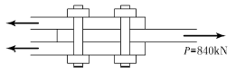
- 5개
- 6개
- 7개
- 8개
(정답률: 65%)
78. 아래 그림과 같은 단면의 보에서 해당 지속 하중에 대한 탄성 처짐이 30mm이었다면 크리프 및 건조 수축에 따른 추가적인 장기 처짐을 고려한 최종 전체 처짐량은 몇 mm인가? (단, 하중 재하 기간은 10년으로 ξ=2.0이다.)
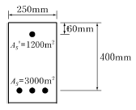
- 42.6mm
- 54.7mm
- 67.5mm
- 78.3mm
(정답률: 62%)
79. 프리텐션 PSC 부재의 단면이 300mm×500mm이고 100mm2의 PS 강선 5개가 단면의 도심에 배치되어 있다. 초기 프리스트레스가 1000MPa이고 n=6일 때 콘크리트의 탄성수축에 의한 프리스트레스 감소량은?
- 15MPa
- 18MPa
- 20MPa
- 23MPa
(정답률: 56%)
80. 콘크리트 설계기준강도가 24MPa, 철근의 항복강도가 300MPa로 설계된 지간 5m인 단순지지 1방향슬래브가 있다. 처짐을 계산하지 않는 경우의 최소 두께는?
- 200mm
- 215mm
- 250mm
- 500mm
(정답률: 38%)
5과목: 토질 및 기초
81. 말뚝기초의 지지력에 관한 설명으로 틀린 것은?
- 부의 마찰력은 아래 방향으로 작용한다.
- 말뚝선단부의 지지력과 말뚝주변 마찰력의 합이 말뚝의 지지력이 된다.
- 점성토 지반에는 동역학적 지지력 공식이 잘 맞는 다.
- 재하시험 결과를 이용하는 것이 신뢰도가 큰 편이다.
(정답률: 57%)
82. 간극률 50%, 비중이 2.50인 흙에 있어서 한계동수 경사는?
- 1.25
- 1.50
- 0.50
- 0.75
(정답률: 68%)
83. 어떤 유선망도에서 상하류의 수두차가 3m, 투수계수가 2.0×10-3cm/sec, 등수두면의 수가 9개, 유로의 수가 6개일 때 단위폭 1m당 침투량은?
- 0.0288m3/hr
- 0.1440m3/hr
- 0.3240m3/hr
- 0.3436m3/hr
(정답률: 51%)
84. 흐트러지지 않은 시료의 정규압밀점토의 압축지수 ( Cc ) 값은? (단, 액성한계는 45%이다.)
- 0.25
- 0.27
- 0.30
- 0.315
(정답률: 50%)
85. 높이 6m의 옹벽이 그림과 같이 수중 속에 있다. 이 옹벽에 작용하는 전 주동토압은 얼마인가?(문제 복원 오류로 그림 파일이 없습니다. 정확한 그림 내용을 아시는분 께서는 관리자 메일로 부탁 드립니다. 정답 1번입니다.)
- 4.8 t/m
- 22.8 t/m
- 10.8 t/m
- 28.8 t/m
(정답률: 64%)
86. 현장도로 토공에서 모래치환에 의한 흙의 단위무게 시험을 했다. 파낸 구멍의 부피가 1,980cm3이었고 이 구멍에서 파낸 흙무게가 3,420g이었다. 이 흙의 토질 실험결과 함수비가 10%, 비중이 2.7, 최대 건조단위무게가 1.65g/cm3이었을 때 이 현장의 다짐도는?
- 약 85%
- 약 87%
- 약 91%
- 약 95%
(정답률: 73%)
87. 지반의 전단파괴 종류에 속하지 않는 것은?
- 극한전단파괴
- 전반전단파괴
- 국부전단파괴
- 관입전단파괴
(정답률: 52%)
88. 현장에서 직접 연약한 점토의 전단강도를 측정하는 방법으로 흙이 전단될 때의 회전저항 모멘트를 측정하여 점토의 점착력(비배수 강도)을 측정하는 시험방법은?
- 표준관입시험
- 더치콘(Dutch Cone)
- 베인시험(Vane Test)
- CBR Test
(정답률: 70%)
89. 아래 그림에서 점토 중앙 단면에 작용하는 유효응력은 얼마인가?(오류 신고가 접수된 문제입니다. 반드시 정답과 해설을 확인하시기 바랍니다.)
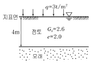
- 1.25t/m2
- 2.37t/m2
- 3.25t/m2
- 4.06t/m2
(정답률: 56%)
90. 습윤단위무게( γt )는 1.8t/m3, 점착력( c )는 0.2kg /cm2, 내부마찰각( φ)은 25°인 지반을 연직으로 3m 굴착하였다. 이 지반의 붕괴에 대한 안전율은 얼마인가? (단, 안정계수 Ns=6.3이다.)
- 2.33
- 2.0
- 1.0
- 0.45
(정답률: 36%)
91. 다음 중 흙속의 전단강도를 감소시키는 요인이 아닌 것은?
- 공극수압의 증가
- 흙다짐의 불충분
- 수분증가에 따른 점토의 팽창
- 지반에 약액 등의 고결제를 주입
(정답률: 66%)
92. 직경 60mm, 높이 20mm인 점토시료의 습윤중량이 250g, 건조로에서 건조시킨 후의 중량이 200g이었다. 함수비는?
- 20%
- 25%
- 30%
- 40%
(정답률: 49%)
93. 다음 중에서 동해가 가장 심하게 발생하는 토질은?
- 점토
- 실트
- 콜로이드
- 모래
(정답률: 75%)
94. 두께 2m의 포화 점토층의 상하가 모래층으로 되어있을 때 이 점토층이 최종 침하량의 90%의 침하를 일으 킬 때까지 걸리는 시간은? (단, 압밀계수( cv)는 1.0×10-5cm2/sec, 시간계수( T90)는 0.848이다.)
- 0.788×109sec
- 0.197×109sec
- 3.392×109sec
- 0.848×109sec
(정답률: 51%)
95. 흐트러진 흙을 자연 상태의 흙과 비교하였을 때 잘못된 설명은?
- 투수성이 크다.
- 간극이 크다.
- 전단강도가 크다.
- 압축성이 크다.
(정답률: 66%)
96. 그림에서 수두차 h가 최소 얼마 이상일 때 모래시료에 분사현상이 발생하겠는가? (단, 모래의 비중 Gs=2.7, 공극률 n =50%, 모래시료 높이 15cm로 가정)
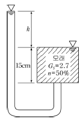
- 12.75cm
- 13.45cm
- 14.30cm
- 15.40cm
(정답률: 60%)
97. 조립토의 투수계수는 일반적으로 흙의 유효입경과 어떠한 관계가 있는가?
- 제곱에 비례한다.
- 최적함수비는 커진다.
- 양입도에서는 빈입도보다 최대 건조단위중량이 크다.
- 다짐 영향을 주는 것은 토질, 함수비, 다짐방법 및 에너지 등이다.
(정답률: 49%)
98. 다짐에 관한 다음 사항 중 옳지 않은 것은?
- 최대건조단위중량은 사질토에서 크고 점성토일수록 작다.
- 다짐에너지가 클수록 최적함수비는 커진다.
- 양입도에서는 빈입도보다 최대건조단위중량이 크다.
- 다짐에 영향을 주는 것은 토질, 함수비, 다짐방법 및 에너지 등이다.
(정답률: 63%)
99. 점토광물 중에서 3층 구조로 구조결합 사이에 치환성 양이온이 있어서 활성이 크고, sheet 사이에 물이 들어가 팽창, 수축이 크고 공학적 안정성은 제일 약한 점토 광물은?
- kaolinite
- illite
- montmorillonite
- vermiculite
(정답률: 60%)
100. 직접전단시험에서 수직응력이 10kg/cm2일 때 전단저항이 5kg/cm2이었고, 수직응력을 20kg/cm2로 증가하였더니 전단저항이 7kg/cm2이었다. 이 흙의 점착력 값은?
- 2kg/cm2
- 3kg/cm2
- 5kg/cm2
- 7kg/cm2
(정답률: 61%)
6과목: 상하수도공학
101. 배수관망 계산시 Hardy Corss방법의 사용에서 바탕이 되는 가정 사항이 아닌 것은?
- 마찰 이외의 손실은 고려하지 않는다.
- 각 폐합관로 내에서의 손실수두 합은 0(zero)이다.
- 관의 교차점에서 유량은 정지하지 않고 모두 유출된다.
- 관의 교차점에서의 수압은 관의 지름에 비례한다.
(정답률: 37%)
102. 유량 0.⑤m3/sec 물을 40m 높이로 양수하려고 한다. 양수시 발생되는 총손실수두가 5m일 때 이 펌프의 소요동력은? (단, 펌프의 효율은 85%이다.)
- 약 15kW
- 약 26kW
- 약 34kW
- 약 45kW
(정답률: 53%)
103. 펌프에 관한 설명으로서 다음 중 틀린 것은?
- 일반적으로 용량이 클수록 효율은 떨어진다.
- 흡입구경은 유량과 흡입구의 유속에 의해 결정된다.
- 토출구경은 흡입구경, 전양정, 비교회전도 등을 고려하여 정한다.
- 침수우려가 있는 곳에는 압축형 또는 수중형 펌프를 설치한다.
(정답률: 74%)
104. 수원을 크게 지표수, 지하수, 기타로 분류할 경우 지표수에 포함되지 않는 것은?
- 하천수
- 호소수
- 복류수
- 댐물
(정답률: 63%)
1⑤. 취수구를 상하에 설치하여 수위에 따라 양호한 수질을 선택 및 취수할 수 있으며, 수심이 일정 이상 되는 지점에 설치하면 연간 안정적인 취수가 가능한 시설은?
- 취수보
- 취수탑
- 취수문
- 취수관거
(정답률: 68%)
106. 하천이나 호소에서 부영양화(Eutrophication)의 주된 원인물질은 다음 중 어느 것인가?
- 질소 및 인
- 탄소 및 유황
- 중금속
- 염소 및 질산화물
(정답률: 69%)
107. 깊이 3m, 표면적 400m2인 어떤 침전지에서 1,200m3/hr의 유량이 유입된다. 독립침전으로 가정할 때 100% 제거할 수 있는 입자의 최소 침강속도는 얼마인가?
- 2.0m/hr
- 2.5m/hr
- 3.0m/hr
- 3.5m/hr
(정답률: 51%)
108. 활성슬러지 공정의 2차 침전지를 설계하는데 다음과 같은 기준을 사용하였다. 이 침전지의 수리학적 체류시간은 얼마인가? (단, 유입수량 : 5,000m3/day, 표면부하율 : 30m3/m2 ㆍ day, 수심 : 5.4m)
- 2.8hr
- 3.5hr
- 4.3hr
- 5.2hr
(정답률: 48%)
109. 분류식 하수배제 방식에 대한 다음 설명 중 옳지 않은 것은?
- 강우시의 오수처리에 유리하다.
- 합류식보다 관거의 부설비가 많이 소요된다.
- 분류식은 오수관과 우수관을 별도로 설치한다.
- 합류식보다 우수처리 비용이 많이 소요된다.
(정답률: 55%)
110. 하수관거별 계획하수량을 결정할 때 고려사항으로서 틀린 것은?
- 오수관거는 계획 시간 최대오수량으로 한다.
- 우수관거는 계획우수량으로 한다.
- 합류식 관거는 계획 1일 최대오수량에 계획우수량을 합한 것으로 한다.
- 차집관거는 우천시 계획오수량으로 한다.
(정답률: 57%)
111. 정수처리과정의 소독방법 중 오존(O3)살균의 장점에 해당되지 않는 것은?
- 물에 있어서 이상한 맛, 냄새, 색을 효과적으로 감소시킨다.
- 살균력이 강력해서 살균속도가 크다.
- 염소살균에 비해서 잔류효과가 크다.
- 소독과정 및 그 후에 취기물질이 더 이상 발생하지 않는다.
(정답률: 67%)
112. 용존산소(DO)에 대한 설명으로서 다음 중 옳지 않은 것은?
- 오염된 물은 용존산소량이 적다.
- BOD가 큰 물은 용존산소량도 많다.
- 용존산소량이 적은 물은 혐기성 분해가 일어나기 쉽다.
- 용존산소량이 극히 적은 물은 어류의 생존에 적합하지 않다.
(정답률: 72%)
113. 관경이 다른 하수관거의 접합방법 중 시공시 하수의 흐름은 원활하나 굴착깊이가 커지는 접합방법은 다음 중 어느 것인가?
- 수면 접합
- 관정 접합
- 관중심 접합
- 관저 접합
(정답률: 69%)
114. 침전지의 침전효율을 높이기 위한 사항으로서 다음 중 틀린 것은?
- 침전지의 표면적을 크게 한다.
- 침전지내 유속을 크게 한다.
- 유입부에 정류벽을 설치한다.
- 지(池)의 길이에 비하여 폭을 좁게 한다.
(정답률: 66%)
115. 배수면적이 0.⑤km2, 하수관거의 길이 480m, 유입 시간이 4min, 유출계수 C = 0.6, 재현기간 7년에 대한 강우강도 I=3,250/(t+18.2)mm/hr, 하수관내 유속이 27m/min일 때 이 하수관거내의 우수량은 얼마인가?(단, 강우지속시간 t의 단위 : min)
- 0.68m3/sec
- 2.45m3/sec
- 3.65m3/sec
- 6.77m3/sec
(정답률: 38%)
116. 급수인구 추정방법에서 등비급수법에 해당되는 공식은?(단, Pn : n년 후 추정인구, Po : 현재인구, n : 경과년수, a, b : 상수, K : 포화인구, r : 연평균 인구증가율)
- Pn=P0+rna
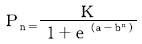
- Pn=P0+nr
- Pn=P0(1+r)n
(정답률: 67%)
117. 슬러지 개량방법으로서 다음 중 옳지 않은 것은?
- 소각처리
- 열처리
- 약품첨가
- 세정
(정답률: 50%)
118. 자연유하식 관로를 설치할 때, 수두를 분할하여 수압을 조절하기 위한 목적으로 설치하는 관수로의 부대설비로서 다음 중 옳은 것은?
- 양수정
- 분수전
- 수로교
- 접합정
(정답률: 66%)
119. 우수조정지에 대한 설명으로서 다음 중 옳지 않은 것은?
- 하수관거의 유하능력이 부족한 곳에 설치한다.
- 용량은 방류하천의 유하능력을 고려하여 결정한다.
- 합류식 하수도에만 설치한다.
- 우천시의 우수를 저장하여 침수를 방지할 수 있다.
(정답률: 58%)
120. 하수의 소독방법 선정시 고려사항으로서 다음 중 틀린 것은?
- 소독방법은 방류수역의 이수특성, 경제성, 효율성을 종합적으로 검토하여 선정한다.
- 염소계 소독방법 이외의 방법을 선정할 경우에는 THM 문제를 해소할 수 있는 대책을 강구하여야 한다.
- 오존 소독방법을 선정할 경우에는 잔여오존 해소대책 및 경제성 비교에 신중을 기하여야 한다.
- 자외선 소독방법을 선정할 경우에는 처리장의 시설 용량을 감안하여 시설비 및 유지관리비가 적게 소요되는 방식을 채택하여야 한다.
(정답률: 62%)